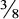

ARSJ Sekiguchi Yasuyoshi, Akutagawa Ryūnosuke to sono jidai (Tokyo: Chikuma shobō, 1999)
CARZ Yoshida Seiichi et al. (eds.), Akutagawa Ryū nosuke zenshū, 8 vols. (Tokyo: Chikuma shobō, 1964–5)
IARZ Kōno Toshirō et al. (eds.), Akutagawa Ryū nosuke zenshū, 24 vols. (Tokyo: Iwanami shoten, 1995–8)
NKBT Yoshida Seiichi et al. (eds.), Akutagawa Ryū nosuke shū, in Nihon kindai bungaku taikei, 60vols. (Tokyo: Kadokawa shoten, 1968–74), vol. 38(1970)
RASHŌMON (Rashōmon)
“Mon” means “gate.” The Rashōmon (originally, Rajōmon: outer castle gate) was the great southern main entrance to Kyoto during the golden age of the imperial court, the Heian Period. Massive pillars supported a cavernous chamber topped by a sloping tile roof, with stone steps leading into and out of its towering archway. In its heyday, all its wooden surfaces wore a coat of vermilion lacquer. The broad Suzaku Avenue running north from the Rashōmon led straight to the gate of the Imperial Palace, where lived the tiny, aesthetically refined fraction of the populace depicted in the country’s greatest literary monument, Murasaki Shikibu’s The Tale of Genji.
Based on a twelfth-century tale, Akutagawa’s retold story is set at the decaying end of the era, when power had largely shifted from the courtiers to the warlords who would dominate the coming centuries, and much of the city—and the gate itself—lay in ruins. Despite its title, Kurosawa Akira’s celebrated film, Rashōmon (1950), owes little to this tale—perhaps the scruffy servant, whose cynical view of human nature the film ultimately rejects, and the setting beneath the gate where Kurosawa’s characters wait out the rain and tell the famous story reflecting multiple angles on truth (see “In a Bamboo Grove”).
1. To borrow a phrase from a writer of old: Akutagawa’s narrator uses an expression found in the twelfth-century Konjaku monogatari (Tales of Times Now Past) for the sensation of the hair standing on end. For an English translation, see Translator’s Note, note 2.
IN A BAMBOO GROVE (Yabu no naka)
Kurosawa’s Rashōmon is based primarily on this story, set in the late Heian Period. Akutagawa’s “Rashōmon” contributed little more to the film than the frame (see that story’s headnote). While this story is based on a twelfth-century tale (for an English translation, see Translator’s Note, note 2), the place names are real, and most relate to the steep hills that line the ancient capital Kyoto’s eastern flank. Yamashina, now an eastern ward of the city, was a village lying just beyond the hills. Situated in the foothills on the city side, Toribe Temple was connected with a burial ground toward the south. Lying just to the north in those foothills, Kiyomizu Temple is still a major site of popular worship. Awataguchi was a familiar northeasterly point of entry from the hills. Wakasa Province would have been several days’ journey on foot to the northeast of Kyoto. The “Magistrate” (Kebiishi, literally “Examiner of Misdeeds,” also translated “Police Commissioner”) to whom the characters speak was a Kyoto city official who exercised both police and judicial authority. In the original tale, the highwayman has no name; Akutagawa seems to have borrowed “Tajō maru” from another story about a “famous bandit” in the same collection.
1. the first watch: 8: 00p.m.
2. Binzuru: The Japanese version of the Sanskrit name Pindolabharadvaja, who was one of the Buddha’s more important disciples and a focus of popular worship.
3. bodhisattva of a woman: In Mahayana Buddhism, an enlightened being who compassionately defers entry into Nirvana in order to help others attain enlightenment. By extension, a perfectly beautiful woman.
4. burial mound: Prehistoric Japanese aristocrats were often buried in mounded graves containing jewels, weapons, and other valuables.
5. Kanzeon: Also known as Kannon. See also “The Nose,” note 1.
THE NOSE (Hana)
“Naigu,” an honorary title for a priest privileged to perform rites within the Imperial Palace, is pronounced “nigh-goo.” While his name, Zenchi, derives from an abstract Zen Buddhist concept of enlightenment, he is a practitioner of a simpler, more widely practiced kind of Buddhism, in which the believer is transported to a more concretely-conceived western paradise, or Pure Land, after death. His fictional temple is located in Ike-no-o, a village now part of the city of Uji, south of Kyoto.
1. Kannon Sutra: Actually a chapter of the Lotus Sutra (Myōhō renge-kyō; Sanskrit: Saddharma Pundarika Sutra; English: Sutra on the Lotus of the Wonderful Law or Scripture of the Lotus Blossom of the Fine Dharma ), which is the premier scripture of Japanese Mahayana Buddhism. Chapter 25 details the miraculous power of the bodhisattva of compassion, Kannon (Sanskrit: Avalokitesvara), to respond to all cries for help from the world’s faithful. Akutagawa’s choice of scriptures in this story is not entirely consistent with any one Buddhist sect.
2. Mokuren… Shu Han emperor: Mokuren and Sharihotsu: two of Shakyamuni Buddha’s sixteen disciples; Sanskrit: Maudgalyayana and Sariputra. Ryū ju and Memyō: Sanskrit: Nagarjuna and Asvaghosa. Liu Bei (162–223) was the first emperor of the Shu Han dynasty (221–64) in southwestern China.
3. Fugen: Sanskrit: Samantabhadra. Often depicted riding a white elephant to the Buddha’s right, Fugen symbolizes, among other things, the Buddha’s concentration of mind. The trunk of the elephant might also have attracted the Naigu’s attention.
DRAGON: THE OLD POTTER’S TALE (Ryū)
Borrowed from China, the dragon, often deified, is one of the oldest East Asian symbols of awesome power and good fortune. Akutagawa’s given name, Ryū nosuke, or “dragon-son,” was meant to confer on him some of the imaginary creature’s auspicious nature. While this story is based on a fictional thirteenth-century tale (for an English translation, see Translator’s Note, note 3), it is set in the very real city of Nara, which was Japan’s capital from 710to 784and is still a major religious center for both Buddhism and Shintō, Japan’s indigenous, nature-loving faith. Sarusawa Pond is a good-sized pond (some 340meters in circumference) situated just across the road from the Great South Gate of the massive Kō fukuji Temple, where the priestly protagonist E’in lives. (The Kasuga Shrine, one of the most important Shintō establishments, is a short walk to the east.) The name E’in is a two-syllable word: “e” as in “yes” followed smoothly (without a glottal stop) by “een” as in “seen.” The name of E’in’s “brother monk,” Emon, has the same short “e” followed by “mon.” According to the lunar calendar in use in pre-modern times, the third day of the third month could occur anywhere from the end of March to late April. The “distant” places mentioned in the text would all have been within a fifty-mile radius, the aunt’s village of Sakurai about twenty miles.
1. Amida: Adherents of Pure Land Buddhism repeatedly call upon the name of Amida (Sanskrit: Amitabha), the Buddha of Infinite Light, in hopes of being reborn in his paradise.
2. great annual Kyoto processions…. out of season: As the imperial capital at the time, and having broad avenues, Kyoto had far grander seasonal processions than Nara. The Hollyhock Festival (Aoi Matsuri) was (and is) one of the grandest of all, occurring in the fourth lunar month (now 15 May) with elaborately decorated oxcarts and viewing stands and hundreds of participants marching between the imperial palace and two major Shintō shrines to pray for good crops and relief from storms.
THE SPIDER THREAD (Kumo no ito)
1. Lord Buddha Shakyamuni: The Japanese often refer to the so-called “historical Buddha,” Siddhartha Gautama (c. 563–c. 483 BC) by his designation as “Sage of the Shakya Clan” (‘‘Shakyamuni”). The image here of “Lord Shakyamuni” (Japanese, “Shaka-sama”) as a supernatural being in Paradise derives from the elaborate Buddhist canon that took shape after his death. For sources of this story, see Translator’s Note. See also note 2 to “O-Gin.”
2. the River of Three Crossings and the Mountain of Needles… peep-box: “Topographical” features of the Japanese Buddhist Hell. The Stygian river, crossed by the soul on the seventh day after death, had routes of graduated difficulty depending on the individual’s accumulated sinfulness. The peep-box (nozokimegane or nozoki-karakuri) enabled the paying customer to view a series of still pictures (often including images of heaven and hell) through openings in the side of a box. The devices had their heyday in the late eighteenth century. See Timon Screech, The Lens within the Heart: The Western Scientific Gaze and Popular Imagery in Later Edo Japan (Honolulu: University of Hawaii Press, 2002).
HELL SCREEN (Jigokuhen)
“Yoshihide” has four evenly-stressed syllables, pronounced: Yo-shee-hee-deh. “Monkeyhide” also has four syllables. For the source of this tale (and an English translation), see Translator’s Note (and note 5).
1. China’s First Emperor… Sui emperor Yang: China’s self-proclaimed “First Emperor” (259–210 BC; reigned 247–210). His construction of the Great Wall, which began c. 228 BCand was completed a few years after his death, cost the lives of many of his subjects. Yang, the second and last emperor of the Sui Dynasty (569–618; reigned 604–618), was another ruler whose ambitious public works cost many lives and much treasure.
2. Nijō-Ōmiya in the Capital: Several eleventh-or twelfth-century stories marked this intersection outside the southeastern corner of the Imperial Palace grounds as a place where one might encounter a procession of goblins. See, for example, Helen Craig McCullough, Ō kagami: The Great Mirror (Princeton University Press, 1980), p. 136.
3. the minister had recreated… spirit vanish: For the translation of a Nō play on the legend of Minamoto no Tōru (822–895), his lavish garden, and his ghost, see Kenneth Yasuda, Masterworks of the Nō Theatre (Bloomington: Indiana University Press, 1989), pp. 460–84.
4. human sacrifice… apillar: This echoes an ancient legend which also inspired a fifteenth-century Nō play, Nagara, in which the spirit of the sacrificial victim returns to seek vengeance for his unjust death.
5. Kawanari or Kanaoka: Both artists, Kose no Kanaoka (fl. c. 895) and Kudara no Kawanari (782–853) were noted for the uncanny realism of their works, none of which survives. A horse that Kanaoka painted on the Imperial Palace wall was said to escape at night and tear up nearby fields. See Yoshiko K. Dykstra, The Konjaku Tales, 3 vols. (Osaka: Intercultural Research Institute, Kansai Gaidai University, 1998–2003), 2:282–4, for a story about Kawanari.
6. Five Levels of Rebirth… Ryūgaiji temple gate: In Buddhism, the five graduated realms to which the dead proceed depending on their virtue in past lives: heaven, human, animal, hungry ghost, hell. Ryūgaiji is a temple near Nara (see “Dragon: The Potter’s Tale”).
7. Monju: Sanskrit: Manjusri, bodhisattva of wisdom.
8. a fox spirit: Japan is particularly rich in folklore about foxes as spiritual creatures with both threatening and nurturing aspects. See Karen A. Smyers, The Fox and the Jewel: Shared and Private Meanings in Contemporary Japanese Inari Worship (Honolulu: University of Hawaii Press, 1998).
9. the Five Virtues: The five Confucian virtues: benevolence, justice, courtesy, wisdom, and fidelity.
DR. OGATA RYŌ SAI: MEMORANDUM (Ogata Ryō sai oboegaki)
Portuguese Jesuits arrived in Japan in 1549, and edicts forbidding the practice of Christianity were issued as early as 1587. The story is set in 1620 (the year of the Monkey), when the Tokugawa government was still observing adherents for signs of subversive activity, and foreign missionaries were not yet being jailed and executed. After the martyrdom of fifty-one Christians in 1622, the government would move against the foreign religion with increasing severity, all but obliterating it in 1638 with the suppression of the Christian-inspired Shimabara Rebellion (see headnote to “O-Gin”). One favored technique for ascertaining an apostate’s sincerity was to have the person tread upon a holy image such as a picture of the virgin or a cross. The place is a remote village in the Province of Iyo at the western end of the island of Shikoku, far from such active Christian (Kirishitan) centers as Shimabara and Nagasaki on the island of Kyushu. Dr. Ogata Ryōsai is a practitioner of traditional Chinese medicine, in which the taking of the pulse was (and is) a major diagnostic tool.
1. Bateren: From the Portuguese “Padre.”
2. Deus Come Thus: Deusu-Nyorai, an amalgam of Japanized Latin and an honorific suffix for the Buddha. The combined term was used by Portuguese missionaries to give the foreign word “Deus” a familiar religious cachet. The Buddha is sometimes referred to as one who has “come thus” from the world of truth to save all sentient beings in the world of illusion.
3. the people of our village: Murakata normally means the three peasant-class officials of a village (headman, assistant headman, and peasants’ representative), but here and in the crowd scene below, Akutagawa seems to be using it to refer to villagers in general.
4. the hour of the hare: 6:00 a.m.
5. pillow to the south: In Buddhism, the dead before cremation are laid out with the head pointing north; the living try to avoid this inauspicious position.
6. cold damage disorder: Shōkan, the equivalent in Chinese medicine of typhoid fever.
7. the hour of the dragon: I.e. close to 9:00 a.m.
8. the red-hairs: “Red-hair” (kōmōjin) originally meant Dutchman as opposed to a Portuguese, but came to designate all foreigners in Japan during the Edo Period.
9. iruman… kohisan: Both from the Portuguese: irmão, a missionary next in rank to a Bateren, and confissão, confession.
O-GIN (O-Gin)
The historical periods mentioned in the opening line, Genna (1615–24) and Kan’ei (1624–44), came near the beginning of the relatively peaceful Tokugawa Period, during which Christianity was suppressed as a destabilizing force (see headnote to “Dr. Ogata Ryōsai”). The Catholic Church officially recognized 3,125 martyrdoms in Japan between 1597 and 1660(Edwin O. Reischauer and John K. Fairbank, East Asia: The Great Tradition (Boston: Houghton Mifflin, 1958), p. 597), but the smashing of the Shimabara Rebellion of 1637–8 marked the virtual end of the “teachings of the Heavenly Lord” in Japan. The events in “O-Gin” take place shortly before the rebellion and are set some fifteen miles to the west of Shimabara, in Urakami, a district just north of the city of Nagasaki, where the secret practice was especially strong. (In modern times, after Urakami was absorbed by the city and Christianity ceased to be an outlaw religion, an impressive cathedral was built there, only to be destroyed, along with hundreds of Japanese Catholics, by the atomic bomb. The community has survived in the area, however, and the cathedral was rebuilt in 1959.)
Akutagawa takes most of his doctrinal language from Dochirina-Kirishitan, a book of Christian dialogues published in Nagasaki in 1600 for the propagation of the faith. Having learned their Catholicism from Portuguese missionaries, the secret Christians of the Tokugawa Period frequently used religious terms that were accurate neither as Portuguese (or Latin or Hebrew) nor as Japanese, and this is reflected in the translation. “Amen,” for example, appears as “Ammei,” and “Inferno” as “Inherno.” The “g” of “O-Gin” is hard, as in “gingham.”
1. San Jo-an Batista… Miguel–Yahei: St. John the Baptist. Believers often took Christian names which they linked with their Japanese personal names.
2. Jean Crasset… Amida: Jean Crasset (1618–92) wrote the two-volume Histoire de l’église du Japon in 1689. Akutagawa paraphrases the opening passage of the Japanese translation of Volume 1, an edition commissioned by the Japanese government in 1878 (an English translation appeared in 1705–7). Shakyamuni lived about a thousand years before Japan received Buddhism from China (see “The Spider Thread,” note 1). He never preached outside the Indian subcontinent, and the worship of Amida (Sanskrit: Amitabha), which was such a widespread hindrance to the spread of Christianity in Japan, was a much later elaboration of Buddhist doctrine.
LOYALTY (Chūgi)
This story is based on an actual event that occurred in 1747 (the fourth year of the Enkyō Period), about a century and a half into the long rule of the Tokugawa family. From the time of family founder Tokugawa Ieyasu (1542–1616), the Tokugawa Shōgun was the de facto ruler of Japan. He received his title from the Emperor, who was little more than a ceremonial figurehead. The Tokugawas ruled from their huge castle (called simply “the Castle”) in the new capital, Edo (modern Tokyo), while the Emperor remained in Kyoto.
Under the Tokugawa system of “centralized feudalism,” a feudal lord’s importance was indicated by the amount of rice produced in his domain, as measured in a unit called the koku (180.30 liters/4. 96 bushels). A “Great Lord” (daimyō) had lands that produced at least 10,000 koku, while the most important of those had over 1,000,000 and the Tokugawa Shōgun himself had some 7,000,000. The House of Itakura had an income of 30,000 koku, but Itakura Shuri (1725– 47), the central character of “Loyalty,” was head of a minor Itakura branch family earning only 7,000 koku. As one of approximately 5,000 “bannermen” (hatamoto) of the Tokugawa, Shuri was permitted to come into the presence of the Shōgunon certain formal occasions. Although he is certainly a “lord and master” to those who serve him, his status is much lower than those normally associated with the title “lord.”
Readers might at first find daunting the large number of names in “Loyalty,” but to follow the action one need keep track of only four characters plus another who enters near the end of the story:
Shuri: The central character, 22-year-old head of his branch of the Itakura family; he is best known for the events recounted in this story.
Rin’emon: The “House Elder” assigned by the Itakura main family to watch over Shuri.
Sado-no-kami: Head of a more important branch of the Itakura family and currently serving as a “Junior Councilor” to the Shōgun.
Usaemon: Shuri’s old tutor and second “House Elder” called to replace Rin’emon.
Etchū-no-kami (Munenori, Hosokawa Etchū): A “Great Lord” of the immensely wealthy Hosokawa family.
The names of other characters can be enjoyed—or at least tolerated—as a sort of background music. One of the best stylistic features of fiction about the samurai—in the original—is their wonderfully resonant names. The following information is provided for those who desire to know more about samurai names, but it is not necessary in order to follow the story.
Like Mori Ōgai, that other great modern writer who created stirring fictional narratives about actual Tokugawa Period samurai, Akutagawa lards his prose with more of these evocative names than are necessary to the plot. At one point, for example, he gives the names of the lowly foot patrolmen who rush to the scene of the crime. For a Japanese reader, these names give the text a special sense of being anchored in reality: each such name is a string of Chinese characters that suggest imposing architectural structures—castle gates, guard houses—and the armed men who actually populated them. The formality of the style reflects the formality of this privileged stratum of society when samurai were more bureaucrats than warriors, engaged more in documentation than swordplay.
A warrior usually has three names: a family name, a rank designation of some kind, and finally a personal name, each ringing with pride and tradition—and with the constraints on the individual that such tradition imposes. The full name of Shuri, for example, is Itakura Shuri Katsukane. This tells us that he is of the noble Itakura lineage; that he has been granted a modest title by the imperial court naming him a palace repairs officer (which of course he was not: “Shuri” was strictly ceremonial); and that he has a personal name, Katsukane, which echoes those of the many other Itakura men with katsu (“victory”) in their names, including the deified clan progenitor, Itakura Shirōzaemon Katsushige (1545–1624).
Another important character, Itakura Sado-no-kami Katsukiyo, has a far more impressive “middle name” than Shuri’s. It tells us that the imperial court has made him titular “Governor of Sado” in keeping with an income that is more than four times larger than his cousin Shuri’s.
Likewise, Etchū-no-kami is the titular “Governor of Etchū,” and his income was nearly twenty times the size of Sado-no-kami’s. Etchūno-kami is sometimes called by that title and sometimes by his personal name, Munenori; at one point he also uses his surname when he identifies himself as Hosokawa Etchū. Use of the rank name, when there is one, tends to be more respectful (one thinks of the lords in Macbeth referring to each other by their domain names), the personal name more intimate. The choice was often a matter of personal preference.
1. Maejima Rin’emon… Itakura Shikibu: No dates are available for the character identified as Maejima Rin’emon in Akutagawa’s immediate source but as Noguchi Bun’emon in earlier source material. See Takahashi Keiichi, “Itakura Shuri no ninjō,” in Kokugo to kokubungaku 73:5 (May 1996), pp. 73–84. At the age of nine, Itakura Shikibu Katsutsugu (1735–65) became the sixth-generation head of the Itakura family and fourth-generation lord of Fukushima Castle. Decisions in his name as a minor at the time of the story were actually made by a senior retainer.
2. Ōkubo Hikoza: (Or Tadataka, or Hikozaemon) (1560–1639) served the first three Tokugawa Shōguns with legendary dedication.
3. Hotta–Inaba clash: Even drawing a sword inside the Castle precincts could be punished with death. The killing of Hotta by Inaba in the Castle had occurred in 1684. Still closer to hand and even more sensational had been the events behind the famous tale of The 47 Loyal Retainers, which started in 1701 when a slighted lord drew his sword in the Castle and wounded his opponent. He was forced to commit seppuku (hara-kiri) and his domain was confiscated. See Donald Keene, Chūshingura (New York: Columbia University Press, 1971).
4. Mencius: The Chinese philosopher Mencius (372–289 BC) was not a believer in unswerving loyalty but taught, rather, that a ruler should be replaced if he failed to heed proper advice.
5. Military Governor: The Shoshidai kept an eye on the doings of the Imperial Household and the aristocratic families of Kyoto for the Shōgun to help ensure that they would remain politically harmless. He also wielded more general police and judicial powers. Matazaemon (1586–1656) held the post for more than thirty years. Mondo Shigemasa (1588–1638).
6. the nineteenth year of Keichō: 1614–15. The Tokugawa forces failed to take the Castle then and concluded a peace treaty, but they attacked again, successfully, the following summer.
7. siege of Amakusa: 1637–8. Amakusa was a Christian stronghold crushed as part of the Shimabara Rebellion (see headnote to “O-Gin”).
8. Junior Councilor: Three to five Junior Councilors (wakadoshiyori) served on a monthly rotating basis below the Senior Councilors (rōjū) and overseeing “bannermen” such as Shuri. Itakura Katsukiyo (1706–80).
9. Usaemon: No dates are available for this character, who is identified as Katō Usaemon in both Akutagawa’s immediate source and earlier source material. See Takahashi, “Itakura Shuri no ninjō.”
10. His Sequestered Lordship of the Western Enclosure: The grandiloquent title (Nishimaru no ōgosho-sama) for the retired (but still powerful) eighth Tokugawa Shōgun, Yoshimune (1684– 1751; ruled 1716–45).
11. the fifth hour of the morning… Munenori: 8a.m. One of Akutagawa’s sources had the personal name of Shuri’s victim wrong: it should be Munetaka (1716–1747), who had a huge domain of 540,000 koku.
12. the General’s Star: In Chinese astrology, a reddish star in the Andromeda galaxy thought to be shaped like a general in battle gear.
13. Kyōgen: Short comic plays performed between the more somber works of the Nō theatre.
14. Tashiro Yūetsu: A Buddhist attendant dressed like a priest and took a priestly personal name (“Yūetsu”) but did not actually take the tonsure and retained his “worldly” surname (“Tashiro”). Many of the great lords kept such low-ranking samurai on stipend as advisors in the tea ceremony and other aesthetic and religious matters. The Akutagawas were of such a lineage.
15. cutting his hair: Perhaps as a sign of religious atonement, as in taking the tonsure.
16. Mizuno Hayato-no-shō: This incident occurred in 1725. The victim recovered from his severe wounds. The attacker and his family were punished by confiscation of their considerable holdings (70,000 koku), but the family was allowed to keep its name. Altogether, there were seven such armed attacks in Edo Castle during the Tokugawas’ two and a half centuries of rule.
THE STORY OF A HEAD THAT FELL OFF (Kubi ga ochita hanashi)
The Sino-Japanese War (1894–5), fought over control of Korea, was Japan’s first foreign war in modern times. Japan succeeded in capturing the valuable Liaodong Peninsula from China but was soon forced to give it back by the “Triple Intervention” of Russia, Germany and France, which laid the groundwork for the Russo-Japanese War (1904–5). The central character of this story, He Xiao-er (Kashōji in Japanese), is a Chinese soldier caught in the first struggle for Liaodong. The translation omits most mentions of the surname to avoid confusion with the English pronoun.
1. Empress Dowager:Cixi(1835–1908), the powerful “Last Empress” of China.
2. Strange Tales of Liaozhai: The collection of supernatural tales is Liao zhai zhi yi by Pu Songling (1640–1715), which has been partially rendered into English as Strange Tales from a Chinese Studio, tr. John Minford (London: Penguin Books, 2006), and Strange Tales of Liaozhai. Story 72, “A Final Joke” (in Minford’s edition), tells how a certain man named Jia literally laughed his head off many years after receiving a near-fatal wound. It gave Akutagawa the idea for this story (IARZ 3:394).
1. Takehisa Yumeji’s illustrations: Painter, poet, and graphic designer Takehisa Yumeji (1884–1934) was one of the most sought-after illustrators of fictional works of his day, specializing in tall, slim beauties projecting a dreamy, elegiac mood.
2. Miss Mary Pickford: “Green Onions” appeared in 1920, four years before Tanizaki Jun’ichirō’s novel Chijin no ai (translated by Anthony Chambers as Naomi (New York: Alfred A. Knopf, 1985)), with its waitress-heroine who resembles the screen star Mary Pickford (1892–1979).
3. naniwa-bushi, eat mitsu-mame:The naniwa-bushi style of chanting with stringed accompaniment was oral literature for the semiliterate, recounting rousing tales based on old-fashioned plots that pitted duty against personal desire; mitsu-mame is an equally plebeian and old-fashioned dessert of sweet beans and agar-agar cubes in thick syrup, rather like Western canned mixed fruit.
4. The Cuckoo… in the Valley: All but the last could be ranked as sentimental or melodramatic works appealing to popular taste, though in O-Kimi’s eyes their Western and modern elements would certainly place them above the pre-modern plebeian preferences of O-Matsu: Tokutomi Roka (1868–1927), Hototogisu (1900), tr. Sakae Shioya and E. F. Edgett, as Nami-ko: A Realistic Novel (Tokyo: Yurakusha, 1905)—see also note 7 and “Daidōji Shinsuke: The Early Years”; Shimazaki Tōson, Tō son shishū (1904) and see “The Life of a Stupid Man,” Section 46(and note 27); Akita Ujaku (1883–1962) et al., Matsui Sumako no isshō (1919), biography of the life and loves of a notoriously “liberated” actress; Okamoto Kidō (1872–1939), Shin-Asagao nikki (1912), a modern version of an 1832 puppet play; Prosper Mérimée, “Carmen” (1845), the story upon which the Bizet opera was based; Takai yama kara tanizoko mireba (possibly just an echo of a line from a popular song of 1870) has not been identified (IARZ 5:340).
5. Kaburagi Kiyokata: Major figure (1878–1927) in the selfconsciously nativist modern Nihonga (literally, “Japan picture”) movement, which distinguished itself from Western oil painting by use of watercolors on paper and silk. Kaburagi was noted for his portraits of traditional beauties, of which Genroku Woman was representative. The Genroku Period (1688–1704), saw a flowering of arts produced for an audience of commoners—woodblock prints, Kabuki drama, the puppet theater, etc.
6. Kitamura Shikai: Modern pioneer (1871–1927) in marble sculpture. His Eve (1915) is owned by the Tokyo National Museum of Modern Art. Akutagawa wrote to a friend in 1915 that he found one of Kitamura’s works (not Eve) just as “stupid” and “unbearable” as most of the other sculptures in an art show he had attended (IARZ 5:340).
7. tragedy based on The Cuckoo: A heart-rending melodrama about a handsome young couple forced apart by the groom Takeo’s mother upon her discovery that the beautiful heroine Namiko has tuberculosis, The Cuckoo was a blockbuster as a book, as a play in the modernized Kabuki-style theater (i.e. Shinpa, which, unlike Kabuki, uses actresses in female parts), and as a movie. Several film versions were made between 1909 and 1958, but this story is probably referring to the 1918 version—in which a male actor played the heroine.
8. two mirrors… slipcovers: A beauty parlor customer would sit at a typical Japanese low cabinet to which was attached a tall mirror that was normally kept covered when not in use. Ancient feelings about mirrors as objects of special power still survive in Japan, though in greatly diluted form.
9. 6-yen… 70 sen it cost for a measure of rice: A sen is a hundredth of a yen. Waitresses were paid around 10 yen per month at the time of the story (a college graduate could expect a starting salary of 65 yen or more; Akutagawa was paid 100 yen monthly by the Naval Engineering School in 1917). What with 6 yen of her base pay being consumed by rent, a 3-measure monthly rice supply costing her over 2 yen, and a daily dip in the public bath costing 5 sen, O-Kimi would have had to depend on tips to make ends meet. See Iwasaki Jirō, Bukka no sesō 100-nen (Tokyo: Yomiuri Shinbunsha, 1982), pp. 286–301.
10. the Hundred Poets card game… the martial music of Satsuma: Tanaka’s talents include the memorization of 100 short poems needed to excel in a traditional popular New Year’s card game that calls for snatching up the appropriate card as quickly as possible when the first few lines of a poem are read aloud. He can also accompany himself on a 4-or 5-string lute known as a “biwa” while singing stirring tales of war and heroism, an especially manly art that originated in the Satsuma domain in the sixteenth century.
11. Douglas Fairbanks… Mori Ritsuko: Douglas Fairbanks (1883–1939), a Hollywood film star, and Mori Ritsuko (1890–1961), a popular stage actress of the day.
12. Puvis de Chavannes’ St. Geneviève: Watch of St. Geneviève, the last painting by Puvis de Chavannes (1824–98) is considered one of his most stirring, another of the art works evoking sentimentalisme in this story.
13. “The Wanderer’s Lament”: “Sasurai,” a song made popular at the time by its use in a Tokyo performance of Tolstoy’s The Living Corpse (1911) in Japanese translation.
HORSE LEGS (Uma no ashi)
1. the recently overthrown Qing dynasty: The Republican (First) Revolution began in October 1911 and brought down the Qing dynasty (1644–1912).
2. Shuntian Times:The Shuntian shibao (in Japanese: Junten jihō), founded in 1901 by Japanese entrepreneur Nakajima Masao, was a Chinese-language newspaper for Beijing, the surrounding area of which was known as Shuntian during the Qing era. For some reason, the editor “quoted” below has a Japanese “name,” Mudaguchi, which means “idle chatter.”
3. Annals of Horse Governance… Quality of Horses: All are genuine Chinese reference works: Ma zheng ji, Ma ji, Yuan Heng liao niu ma tuo ji, Bo Le xiang ma jing.
4. ancient records: From the chapter on punishment in Kongcongzi (The Kong Family Masters’ Anthology), a fictitious Confucian text compiled in the third century AD.
5. loudly beat the drum: Echoing Chapter 11, Verse 16 of the Confucian Analects (c. 450 BC).
6. Okada Saburō: Novelist (1890–1954), went to France in 1921 and began publishing French contes that contrasted sharply with the autobiographical fiction that dominated much of Japanese publishing. In 1920, Akutagawa found some of his work at least “promising” (IARZ 6:61). Major Yuasa has not been identified.
DAIDŌJI SHINSUKE: THE EARLY YEARS (Daidōji Shinsuke no hansei/—Aru seishinteki fūkeiga—)
1. Ekō in Temple… Honjo Ward: Founded in 1657, the Ekōin Temple remains an important center of neighborhood life. Akutagawa grew up in this strongly traditional neighborhood of Honjo Ward on the flat, low-lying east bank of the Sumida River after he was adopted, though he was born in Kyōbashi Ward in another, west bank, part of Tokyo’s “low city.” See Edward Seidensticker, Low City, High City (New York: Alfred A. Knopf, 1983), pp. 4–5, 8–9, 214–20.
2. Roka’s Nature and Man… Beauties of Nature: Tokutomi Roka (1868–1927), Shizen to jinsei (1900), tr. Arthur Lloyd et al., as Nature and Man (Tokyo, 1913)—see also “Green Onions”; Sir John Lubbock (1834–1913), The Beauties of Nature and the Wonders of the World We Live In (1893).
3. mother’s milk: Akutagawa conflates his birth parents and adoptive parents in this story. See the notes below, plus the other stories in this section, and the Chronology for factual accounts of his life.
4. vita sexualis: For an English translation of the controversial novel to which this refers indirectly, see Mori Ōgai, Vita Sexualis (1909), tr. by Kazuji Ninomiya and Sanford Goldstein (Tokyo: Tuttle, 1972).
5. battle of Fushimi-Toba: Akutagawa’s birth father fought with the rebel Satsuma troops against the army of the Tokugawa government on 3 January 1868 in the Kyoto suburbs of Fushimi and Toba, the single greatest clash leading to the downfall of the regime.
6. dairy farm that the uncle owned: Actually Akutagawa’s birth father, who would have been about fifty-five at the time.
7. father… ¥500: The uncle who adopted Akutagawa retired in 1898 as an assistant department head in the Tokyo government’s internal affairs division with an annual stipend of ¥720, rather better than Shinsuke’s father (IARZ 24:57). Compared with the average middle-class annual income of ¥600, Shinsuke’s father’s was on the low side: they were not poor, but not comfortable.
8. school-sponsor meetings: Hoshō nin kaigi, precursor of modern parent-teacher groups.
9. Kunikida Doppo: As a pioneer of the modern Japanese short story, Kunikida Doppo (1871–1908) was Akutagawa’s single most important predecessor. The highly wrought diary that covered Doppo’s mid-twenties, Azamukazaru no ki (Diary without Deceit) was one of the most successful and influential pieces of introspective writing of its day. If Akutagawa himself kept a diary like Shinsuke’s, it has not survived, but the passages “quoted” here read much like Doppo’s; indeed, this story’s pervasive self-conscious use of parallel prose owes much to him. See also notes 14 and 15.
10. Way of the Warrior: Low-ranking samurai like the Buddhist attendants in the story “Loyalty,” the Akutagawas had for generations served as tea masters to the Tokugawa Shōgun. On the Way of the Warrior (bushidō), see Hagakure: The Book of the Samurai, tr. William Scott Wilson (Tokyo: Kodansha International, 1992).
11. middle school to higher school: In Akutagawa’s day, four years of compulsory elementary school were followed by three of upper-level elementary school, five of middle school, and three of higher school. He attended middle school from age 13 to 18 and higher school from 18 to 21.
12. suicide: A hypothetical situation briefly described in Notes from the House of the Dead (1860–61), Part I, Chapter 2.
13. “Dharma”: Good-luck dolls representing the Zen patriarch Bodhidharma tend to be round and have enormous eyes.
14. Katai: Doppo and Tayama Katai (1871–1930) were associated with the “Naturalist School” of fiction that flourished in Japan in the first decade of the twentieth century.
15. A Hunter’s Diary: Turgenev’s A Sportsman’s Notebook (1847–51) had deeply influenced modern Japanese lyricism since its partial translation into Japanese (as Ryōjin nikki (A Hunter’s Diary)) in 1888. Doppo was among those who wrote affectingly about the work. Akutagawa (or at least Shinsuke) would have read the 1906 Constance Garnett translation, A Sportsman’s Sketches, in 1909 when he was seventeen.
16. Outlaws of the Marsh: Translated into English variously as Water Margin, The Men of the Marshes, Outlaws of the Marsh, The Marshes of Mt. Liang, and All Men are Brothers, the multivolume vernacular Chinese adventure novel of the fourteenth century known in China as Shuihu zhuan by Shi Nai-an was translated into Japanese in the early nineteenth century and since then has been widely known and loved in Japan as Suikoden. Akutagawa read it in the edited translation by the Edo novelist Takizawa Bakin (1767–1848) which was included in a popular uniform library called Teikoku bunko. Battle flag… Zhang Qing’s inn: from Chapters 76, 23, and 27 respectively; done battle with characters: from Chapters 48 and 4 passim respectively.
17. Reineke Fuchs: Goethe’s 1792 version of Reynard the Fox, first translated into Japanese in 1884.
18. Murata Seifū to Yamagata Aritomo: Murata Seifū (1783–1855) was a pioneer advocate of the kind of strong military policy that Yamagata Aritomo (1838–1922) helped realize as one of the central Restoration leaders.
19. Genroku Period… night heron’s scream: The greatest haiku poet, Matsuo Bashō (1644–1694), flourished during the Genroku Period (see “Green Onions,” note 5). All four images are from haiku by Bashō and his disciples: “Matsutake, oh!/Shape of the mountain/Near the capital” (Matsutake ya/Miyako ni chikaki/Yama no nari) by Hirose Izen (d. 1711); “Here the morning dew!/In turmeric fields/The wind of autumn” (Asa-tsuyu ya/Ukon-batake no/Aki no kaze) by Nozawa Bonchō (d. 1714); “How busy they are—/Offshore in chilly rain/Sails running, sails reefed” (Isogashiya/oki no shigure no/maho-kataho)by Mukai Kyorai (1651–1704); and “A lightning flash!/Into the darkness goes/A night heron’s scream” (Inazumaya/Yami no kata yuku/Goi no koe) by Bashō.
20. used bookstores that lined Jinbōchō Avenue: On Jinbōchō, see “Green Onions,” p. 120.
21. Ōhashi to the Imperial Library: The Ōhashi Library was a private institution founded in 1901 by the publisher and politician Ōhashi Shintarō (1863–1944). The Imperial Library was the fourth incarnation of a public library founded in 1872 in Ueno Park by the national government, and, generally known as the Ueno Library, it is now part of the National Diet Library.
22. Livingstone: David Livingstone (1813–73), Scottish doctor, missionary, and explorer, and author of Missionary Travels and Researches in South Africa (1857).
23. Herr und Knecht: Master and servant (German).
24. Mushanokōji Saneatsu:(1885–1976), novelist much admired by young readers of Akutagawa’s day for his philosophical musings. See also “The Writer’s Craft” (and note 3).
25. To be continued: Akutagawa appended a note indicating his intention to expand the story to three or four times its present length. He never did write the longer version, but the other stories in this section have been arranged to continue the narrative of a life resembling Akutagawa’s.
1. Krafft-Ebing… Masoch: Baron Richard von Krafft-Ebing (1840–1902), German neuropsychologist, author of Psychopathia Sexualis (1886). Leopold von Sacher-Masoch (1836–95), Austrian novelist.
2. in the style of the old Japanese Jesuit translations of Aesop: Akutagawa’s “Kirishitohoro-shōnin den” (“The Life of Saint Christopher”) (March 1919), a stylistic tour-de-force which has not been translated into English, employs archaic language modeled on the sixteenth-century Japanese Jesuit translation of Aesop’s Fables.
3. Hitomaro… Saneatsu: Kakinomoto no Hitomaro (late seventh century) and Mushanokōji Saneatsu (1885–1976) mark either end of Japanese literary history as seen at the time of the story. Akutagawa undoubtedly chose Mushanokōji, a master of pseudoprofundities, for his sonorous aristocratic name (see also “Daidōji Shinsuke: The Early Years,” note 24).
4. “Funerals”: Akutagawa never wrote such a story. Ōmoto-kyō, a religion of spirit possession with Shintō roots, was founded in 1892 and suppressed by the Japanese government in 1921 (and again in the 1935–45 wartime period). His predecessor at the Naval Engineering School inadvertently created the position for Akutagawa in 1916 by resigning to enter the controversial sect.
5. Shinnai style: A school of plaintive narrative singing with samisen accompaniment that originated in the eighteenth century.
6. Dōmyō… Hōrinji Temple:Dōmyō (?–1020) was said to be such a marvelous chanter of the Lotus Sutra that deities once came from some of the holiest sites in Japan to hear him chanting at the Hōrinji Temple in Kyoto. For a translation of a twelfth-century story about the event, see Dykstra, The Konjaku Tales, 1:156–9.
THE BABY’S SICKNESS (Kodomo no byōki)
1. Natsume Sensei… Musō: Natsume Sensei—“Master Natsume” —is the novelist Natsume Sōseki, Akutagawa’s late literary “master.” See Chronology and “Spinning Gears.” In this brief dream sequence, Akutagawa deliberately jumbles references to two nineteenth-century Confucian scholars, brothers Hirose Kyokusō (1807–1863) and Hirose Ensō (1782–1856), and the fourteenth-century Zen priest MusōSoseki (1275–1351), whose name means “Dream Window.” The storyteller Tanabe Nansō (1775–1846) will be added to the mix a few paragraphs later.
2. Taka: “Taka” is Akutagawa Takashi, who was seven months old at the time of the story (1923). Since he had already lived in two calendar years, the original text calls him “two years old” following the traditional method of counting ages. His elder brother Hiroshi was three years old.
3. Dr. S: Dr. Shimojima Isaoshi, Akutagawa’s own physician—and close friend—since the family moved to Tabata. The baby’s temperature below (37.6°C) is 99.7°F.
4. like a schoolgirl again: Tsukamoto Fumi was a fifteen-year-old schoolgirl when Akutagawa, eight years her senior, first began to consider the possibility of marrying her.
5. Hōitsu: Sakurai Hōitsu (1761–1828), a figure associated with late-Edo frivolity.
6. Sainted Founder… Lotus Sutra: The founder of the Nichiren sect, the central scripture of which is the Lotus Sutra, was Nichiren (1222–82). On the Lotus Sutra, see “The Nose,” note 1.
DEATH REGISTER (Tenkibo)
1. Shiba Ward: A west-bank “low city” ward near Akutagawa’s birthplace. See also “Daidōji Shinsuke: The Early Years,” note 1. His “Ōji Auntie” (p. 181) is from Ōji Ward at the north end of Tokyo. Yanaka (p. 181) is a west-bank low-city neighborhood with many temples and cemeteries.
2. Story of the Western Wing: Xixiang ji (Seisō ki or Seishōki in Japanese), by Wang Shifu (c. 1250–1300). Akutagawa slightly misquotes the source but with little change in impact. See Wang Shifu, The Story of the Western Wing, tr. Stephen H. West and Wilt L. Idema (Berkeley: University of California Press, 1995), 4. p. 242.
3. Iris Bouquet: Ayame Kōsui seems to have been the brand name of a perfume.
4. memorial tablet: A plain wooden slat, usually 4 or 5 feet long, 4 inches wide and perhaps

’’ thick, inscribed vertically in black India-ink characters with the posthumous Buddhist name of the deceased (see next note) and erected at the cemetery during the interment ceremony. After the first forty-nine days of mourning, a smaller tablet, perhaps 8 inches high and 3 inches wide and usually finished in glossy black lacquer with the posthumous name inscribed in gold characters, is installed in the family altar at home, where prayers are offered up to the departed spirit. On the “tiny memorial tablet” (p. 183) for Little Hatsu: as her younger brother, Akutagawa would have seen only the small tablet in the shrine at home.5. Kimyō in Myōjō Nisshin Daishi: The lengthy “preceptive appellation” (kaimyō) was an entirely typical agglomeration of Sino-Japanese labels indicating that she was a faithful adult female lay member of the Nichiren sect: Kimyō in (Taking (faithful) refuge in the hall (of Buddha))/Myōjō (Wondrous Vehicle (of the Buddhist Law))/Nisshin (Sun-Advance: a name in the style of sect founder Nichiren (Sun-Lotus))/Daishi (Elder (Lay) Sister). On the Nichiren sect, see “The Baby’s Sickness,” note 6.
6. Little Hatsu: Niihara Hatsu (1885–91).
7. a Mrs. Summers… Tsukiji: Ellen Summers (1843–1907), the wife of English literature instructor James Summers, ran a school in her home c. 1884–1908. Among her pupils was the writer Tanizaki Jun’ichirō (see “The Life of a Stupid Man,” note 5). Perhaps a fifteen-minute rickshaw trip northeast of Shiba, Tsukiji was a treaty-designated foreign residential area in the early Meiji period, until such segregated housing was abrogated by new treaties signed in 1899.
8. boke: The name of the tree, known as a Japanese quince (Pyrus japonica) in English, is a homonym for “dimwit.” Before the aunt can joke with her that both she and the tree are “boke,” Hatsu cleverly makes up her own remarkably similar word play using “baka” (dummy).
9. Shinjuku: Then a western suburb, but now one of the most intensively developed commercial, municipal government, and entertainment districts in Tokyo, Shinjuku could not have supported a pasture much after the death of Akutagawa’s father (in 1919), and certainly not after the earthquake of 1923 triggered its transformation.
10. Uoei restaurant in Ōmori: Local records indicate that the restaurant was in business from approximately 1895 to the mid-Taishō period. Ōmori was a southern ward of Tokyo.
11. Irish reporter friend: Thomas Jones (1890?–1923) came to Japan in 1915 as an English teacher and became a correspondent in the Reuters Tokyo office. Called “my brother’s best friend” by Jones’s sister Mabel, Akutagawa wrote movingly of this some what naïve admirer of Japan when both were idealistic 25-yearolds and then again when they were closer to 30 and more jaded. Jones was killed by smallpox after being reassigned to Shanghai in 1919 (“Kare/Dai ni” (1926) and IARZ 14:289).
12. Jōsō’s: NaitōJō sō (1662–1704), one of Bashō’s “ten wise disciples,” wrote this haiku (Kagerōya/Tsuka yori soto ni/Sumu bakari) on the occasion of a visit to Bashō’s grave that gave rise to thoughts about his own declining health. Jō sō must have sensed that the entire difference between himself and the dead occupant of the grave was as insubstantial as a shimmering wave of heat.
THE LIFE OF A STUPID MAN (Aru ahō no isshō)
1. Kume Masao: The writer (1891–1952) had been one of Akutagawa’s closest friends and literary collaborators since their days together in higher school and university.
2. I don’t want you adding an index identifying them: Scholars of Japanese literature have, of course, done their best to subvert this dying wish of Akutagawa’s, as I shall.
3. house in the suburbs: Akutagawa was eighteen years old in 1910 when he, his adoptive parents, and Aunt Fuki moved into a house owned by his biological father near the latter’s pastureland.
4. Mukōjima… since the Edo Period: Before the Meiji Restoration and the renaming of the city of Edo as Tokyo in 1868, Edo had been the capital of the Tokugawa Shōguns. The eastern bank of the Sumida River, known as Mukōjima, was one of Edo’s prime spots for viewing cherry blossoms.
5. elder colleague: The writer Tanizaki Jun’ichirō (1886–1965), best known in the West for such novels as The Key (1956) and The Makioka Sisters (1943–8), attended Tokyo Imperial University from 1908 until he was expelled in 1911 following his widely heralded debut on the literary scene. In 1914 Akutagawa and some friends revived the short-lived literary magazine (see Section 8) that Tanizaki had used to attract critical attention to his own work.
6. a world of which he knew nothing: Automobiles were still in development and far beyond the reach of ordinary people during Akutagawa’s lifetime. Having left home, Tanizaki was a far more free-spirited individual than Akutagawa, especially after the successful launching of his writing career in 1910, some three or four years before the presumed setting of this episode, and Akutagawa is inordinately impressed at his elder’s ability to fritter away several hours in such a luxurious way.
7. phlegm: In May 1915 Akutagawa seems to have been coughing up phlegm, perhaps mixed with blood, and feared he might have tuberculosis, but tests proved otherwise.
8. a piece set against a Heian Period background: This probably refers to “Rashōmon” (see its headnote).
9. The Master: Natsume Sōseki: see “The Writer’s Craft,” “The Baby’s Sickness,” and “Spinning Gears.”
10. he first met the Master: Akutagawa was probably first honored by an invitation to attend a “Thursday Evening” literary gathering in Sōseki’s home on 18 November 1915 with his friend and fellow Sōseki “disciple” Kume (see ARSJ, p. 163).
11. the Kongō: The name of an actual cruiser in the Japanese navy. Akutagawa was treated to a cruise on it in 1917.
12. The Master’s Death: When Sōseki died on 9 December 1916, Akutagawa was in Kamakura, and finally got back to Tokyo on the 11th and manned the reception table at the Aoyama Funeral Hall service (see IARZ 24:94–5; ARSJ, pp. 224–5).
13. his aunt, who had ordered him to deliver it: Akutagawa married Tsukamoto Fumi on 2February 1918, and Aunt Fuki lived with them at first and took the traditional role of overbearing mother-in-law. She returned to Tokyo in mid-April, which undoubtedly accounts for the serenity of Section 15.
14. bashō leaves: Akutagawa wrote to a friend that their house was “a little too big for us” but that “the surroundings, with a lotus pond and bashō plants, are rather elegant” (NKBT 38:248 n. 5). On the poetic bashō plant, see “Spinning Gears” (and note 20).
15. Butterfly: Besides his wife, four women of interest appear in this story: (1) the woman in this section, who is thought to be the same as the “crazy girl” in Sections 21, 26 and 38, with an indirect reference via her husband in 28; (2) the unidentified woman whose face seems to be bathed in moonlight in sections 18, 23, 27, and 30; (3) the “Woman of Hokuriku” in Section 37; and (4) the “Platonic suicide” woman in Sections 47 and 48.
16. went to work for a newspaper: Akutagawa offered to join the Tokyo branch of the Osaka Mainichi Shinbun newspaper in March 1919 and moved to Tokyo the following month; in return for writing “several” stories a year for the paper, this contract gave him a regular income of 130 yen per month but no manu script fees. He had been an “associate” of the paper since 1918, an arrangement that left him free to publish stories in any magazines he liked but prohibited him from writing for any other newspaper (see NKBT 38:250 nn. 5, 6).
17. Crazy Girl… failed to capture her heart: In a last letter to his artist friend Oana Ryūichi (see next note), Akutagawa mentioned his affair with the poet Hide Shigeko (1890–1973; early pen name Tomone Shigeko), when he was twenty-nine, as one source of the suffering that was impelling him to suicide: it was not a matter of conscience, he said, but regret at what his involvement with such a headstrong, lustful woman had done to his life. He had spotted her at a literary gathering in June 1919 and pursued her aggressively, only to be repelled by her greater aggressiveness. (At the time, Fumi was pregnant with their first child: see Section 24.) The “crazy girl” (he calls her a “girl” despite her being two years his senior and married, with a five-year-old son) also appears in Sections 26and 38, and in “Spinning Gears” as “my Fury… my goddess of vengeance” (p. 222). Her husband (thought also to be the man in Section 28) was an electrical engineer who had studied modern theatrical lighting abroad before they married in 1912. She would have a second son with him in January 1921and tell Akutagawa the child was his. See IARZ 23:84–5; Kikuchi Hiroshi et al. (eds.), Akutagawa Ryū nosuke jiten (Meiji shoin, 1985), p. 419; ARSJ, pp. 344–50; Sekiguchi Yasuyoshi (ed.), Akutagawa Ryū nosuke shin-jiten (Kanrin shobō, 2003), pp. 397, 505–6.
18. the painter: Thus, in 1919, began Akutagawa’s close friendship with the Western painter Oana Ryūichi (1894–1966), who did the cover art for most of Akutagawa’s books after 1921. Akutagawa dedicated “The Baby’s Sickness” to him.
19. The Great Earthquake: The writer Kawabata Yasunari (1899–1972) has recorded his impressions of his trek with Akutagawa and another friend through the devastation of the Great Kantō Earthquake. The pond was located in the Yoshiwara pleasure district.
20. “Those whom the gods love die young”: In Greek mythology, after the brothers Trophonius and Agamedes had built the temple of Apollo at Delphi, they were rewarded by the gods with death as the fulfillment of their greatest wish (Micha F. Lindemans, Encyclopedia Mythica (online)).
21. His sister’s husband… perjury: Akutagawa’s brother-in-law, lawyer Nishikawa Yutaka (1885–1927), the second husband of his sister Hisa, had been disbarred and jailed in 1923 for inciting a client to commit perjury. He was under suspicion of arson when he killed himself in January 1927 after his over-insured house burned down (hence the reference to Akutagawa’s sister having lost her house to fire). Hisa had two children with each husband and remarried the first husband, a veterinarian, after the second’s death. Akutagawa never got along well with her or with his half-brother, Tokuji, “but his position as first son gave him a lifelong responsibility for their welfare” (Howard S. Hibbett, “Akutagawa Ryūnosuke,” in Jay Rubin (ed.), Modern Japanese Writers (New York: Scribners, 2001), p. 20). All three appear in “Spinning Gears.”
22. a short Russian man: This is thought to be an image of Lenin.
23. a story: This has been thought to refer to “Noroma ningyō” (“Noroma puppets”), an early story (1916) in which a nearly defunct form of traditional Japanese comic puppetry provokes the narrator to thoughts of universality vs. cultural determination in the arts. If there is any hint of self-reproach in the story regarding his inability to be fully liberated, it is very subtle. Other scholars have noted thematic ties with “Loyalty” (see IARZ 16:338, n. 57.2).
24. “Woman of Hokuriku”: Akutagawa stated that he had no affairs after the age of thirty and that writing lyric poetry helped him avoid the complications of an affair when he did feel love for a married woman one last time. “Woman of Hokuriku” (“Koshibito”) was a series of twenty-five poems in the archaic sedōka form (5-7-7, 5-7-7 syllables), though the piece he quotes is one of three archaic four-line “Love Letter Poems” (sōmon)(7-5, 7-5, 7-5, 7-5) that were also prompted by the near affair. Akutagawa no doubt chose the old forms because the fear of compromised reputations was a theme in Japanese love poetry from the earliest times. Katayama Hiroko (1878–1957), wife of a prominent bureaucrat, wrote poetry and achieved fame as a translator of Irish literature under the name Matsumura Mineko. She was not actually from Hokuriku, but Akutagawa’s close call with her occurred in the resort town of Karuizawa (see “Spinning Gears,” note 8), near the old route to Hokuriku, in the summer of 1924(CARZ 6:207, 214; 8:117; NKBT 38:258, nn. 3–7).
25. Punishment: Here, “fukushū” (normally “vengeance”) is thought to mean the punishment that later events can wreak for earlier actions (NKBT 38:258, n. 8).
26. Divan: Goethe’s West-östlicher Divan (West-Eastern Divan (1819)), a volume of poetry inspired in part by his reading of the Persian poet Hafiz in German translation.
27. Tōson’s New Life: Shimazaki Tō son (1872–1943) has often been criticized for exploiting his family to create his autobiographical novels. In Shinsei (New Life (1918–19)), he exposed his affair with a niece.
28. the tree Swift saw: While barely fifty, Jonathan Swift (1667–1745) is reported to have pointed to a withered tree and predicted, with unsettling accuracy, “I shall be like that tree. I shall die from the top.” See Robert Wyse Jackson, Jonathan Swift: Dean and Pastor (London: Society for Promoting Christian Knowledge, 1939), p. 94.
29. fond of her: Hiramatsu Masuko, a close friend of Fumi, had been ill in her youth, and never married.
30. a shii tree: Shii can designate either Castanopsis cuspidata or Castanopsis sieboldi. The “Japanese chinquapin” is related to the Giant Evergreen-chinkapin of the northwestern United States.
31. “Poetry and Truth”: Dichtung und Wahrheit is the subtitle of Goethe’s autobiography Aus meinem Leben (1811–33).
32. One of his friends went mad: Akutagawa’s good friend, the novelist Uno Kōji, was suffering from mental illness and was treated (first with a rest cure at a hot-spring resort, later with actual hospitalization) by Saitō Mokichi, who also treated Akutagawa (see “Spinning Gears,” note 19). The rose-eating episode was simply one example of Uno’s odd behavior at the time (ARSJ, pp. 605–10).
33. “God’s soldiers are coming to get me”: Given as, “Listen to something terrible. In three days I am going to be shot by God’s soldiers,” in “Foreword” by Jean Cocteau, in Raymond Radiguet, Count d’Orgel’s Ball (1924), tr. Annapaola Cancogni (Hygiene, Colorado: Eridanos Press, 1989), p. xii.
SPINNING GEARS (Haguruma)
1. Tōkaidō Line: The 320-mile-long Tōkaidō (Eastern Sea Road) has been the main route between Kyoto and Tokyo since the seventeenth century, traveled at first on foot and horseback (nowadays on the Shinkansen “Bullet” train). In late April 1926, Akutagawa, suffering from a host of ills including insomnia and nervous exhaustion, left his two older sons at home and took his wife Fumi and infant son Yasushi for the first of several lengthy stays through the end of that year in Kugenuma, off the Tōkaidō main rail-line, to which he would connect by car for the thirty-mile trip to Tokyo (see ARSJ, p. 350). For further autobiographical details, see the Chronology.
2. natsume: This round fruit comes from a jujube or Chinese date tree. The word also echoes the name of Natsume Sōseki, whose presence as Akutagawa’s erstwhile literary “Master” (Sensei) can be felt on many levels in this reconsideration of the role of the writer and the man-made wings that bring him too close to the sun. See also note 20.
3. Oyako-donburi: Literally, “parent-child bowl,” a bowl of rice topped with a moist concoction of chicken cooked in eggs.
4. elementary-school girls: Under the revised school system of 1907, six years of compulsory elementary education could be followed by another four years of “higher elementary school.” The girls mentioned here would be of middle-school age today.
5. infection: Literally he senses she has empyema (chikunōshō)in her nose. The term was used loosely, with none of its dire clinical overtones, to describe a nasal voice when there were no obvious cold symptoms.
6. cooperatives: Farmers’ cooperative societies were an increasingly important feature of the Chinese economy at the time, and the friend’s overseas venture may have been doomed by a failure to obtain credit with such organizations.
7. Mme. Caillaux’s shooting: In 1914, Henriette, the wife of the French Minister of Finance, Joseph Caillaux, killed the newspaper’s owner for attacks on her husband’s reputation. Joseph resigned to participate in her successful defense.
8. Karuizawa: A fashionable summer resort with a large foreign contingent.
9. modern whatchamacallems: He is trying to recall “modan gãru” (modern girl), Japan’s equivalent of “flapper.”
10. kirin… hōō: Japanese pronunciations of the Chinese mythical beasts qilin (or kylin) and fenghuang. The kirin, which is said to appear on auspicious occasions such as prior to the birth of a sage, is a composite of several animals but is overall deerlike and does indeed have a single horn like a unicorn’s. (The word has been borrowed to mean “giraffe” in modern Japanese.) See also note 36. The equally auspicious hō ō is often compared with the Western phoenix.
11. Yao and Shun… Han period: Yao and Shun were model emperors from the misty legendary era of Chinese history. Also known as the Chronicles of Lu, the Spring and Autumn Annals is a simple chronology of the Chinese state of Lu, covering the years 722–481 BC. As with the other classics discussed by Confucius in the sixth century BC, its authorship is unknown, but it certainly predated the Han dynasty (206 BC–220 AD).
12. “Worm”… a legendary creature: Akutagawa is probably relating this to the Old English “wyrm,” meaning “serpent,” and also to a part of his own name meaning “dragon.”
13. one sandal: Jason’s single sandal marked him as an enemy of the wicked king Pelias and led to his being sent on the quest for the golden fleece.
14. volcanic stone: The stone referred to here is tufa, or Neocene quartz, a greenish-gray rock formed of heat-fused volcanic detritus, and this architectural detail leaves little doubt that “Spinning Gears” is set in Frank Lloyd Wright’s fashionable, expensive Imperial Hotel, a Tokyo landmark. Wright’s liberal use of the soft, easily-carved stone was a mark of his architecture in Japan. He found his supply in the town of Ōya-machi, where it was popularly called Ōya stone, but Akutagawa repeatedly refers to it by the more general term gyōkaigan (fused ash stone), perhaps recalling its volcanic (= hellish?) origin. Hiramatsu Masuko’s father (see Sections 47 and 48 of “The Life of a Stupid Man” and note 29), a lawyer connected with the hotel, probably was able to make affordable arrangements for the famous author (see ARSJ, pp. 566–79).
15. arson… perjury: See “The Life of a Stupid Man,” Section 31 (and note 21).
16. Die, damn you:“Kutabatte shimae!” This was the curse hurled at the young Hasegawa Tatsunosuke (1864–1909) when he told his father he wanted to be a novelist, and from which he created his pen name, Futabatei Shimei. Akutagawa is probably echoing Futabatei’s well-known misgivings about the writing of fiction as a profession.
17. “Oh, Lord… soon perish”: This “prayer,” which begs the deity of the Bible both for punishment and for a withholding of wrath, bears some resemblance to Psalm 38, in which David begs God to ease off on his anger, which is causing him a laundry list of physical and mental afflictions: “O Lord, rebuke me not in thy wrath: neither chasten me in thy hot displeasure. For thine arrows stick fast in me, and thy hand presseth me sore” (verses 1–2; King James Version).
18. nerves: Akutagawa wrote similar aphorisms several times. E.g. in Words of a Dwarf (Shuju no kotoba), an aphoristic essay series, which was serialized in 1923: see also note 25 below (see IARZ 16:82).
19. Aoyama… Numal: Akutagawa was obtaining drugs from the head of the Aoyama Hospital, Saitō Mokichi, who was shocked to hear that Akutagawa had killed himself, perhaps with the very drugs that he had given him (“Introduction,” Mokichi Saitō, Red Lights, tr. and introduction by Seishi Shinoda and Sanford Goldstein (West Lafayette, IN: Purdue Research Foundation, 1989), p. 59). (See also note 41.) Veronal (a white crystalline British product known also as Diethylmalonyl urea, diethylbarbituric acid, and Barbital) was a brand-name barbiturate that Virginia Woolf had used in an early suicide attempt. Akutagawa succeeded in ending his life with it. The other drugs have not been identified.
20. bashōplants at the Sōseki Retreat: Sōseki Sanbō (“retreat”) was the poetic name for Sōseki’s study (and, more generally, his home), especially in connection with the Thursday gatherings. See also “The Life of a Stupid Man,” notes 10 and 12. The large but fragile leaves of the bashō (banana or plantain) are a traditional symbol of evanescence, as employed in the pen name of Bashō; see also Section 13 of “The Life of a Stupid Man” (and note 14).
21. Legends: Akutagawa uses a Japanese translation of the title of August Strindberg’s Legender (1898). Maruzen is the bookstore mentioned in Section 1 of “The Life of a Stupid Man.” It remains the premier retailer of foreign books in Japan.
22. Chinese story… Handan style: Akutagawa mistakenly attributes this anecdote by Zuangzi (or Chuang Tzu, fourth-century BC Daoist philosopher) to Han Fei (280?–233? BC). For an English translation, see Zuangzi, The Complete Works of Chuang Tzu, tr. Burton Watson (New York: Columbia University Press, 1968), 2. p. 187.
23. art of slaughtering dragons: A metaphor for a useless skill. Again the anecdote comes from Zuangzi. For an English translation, see The Complete Works of Chuang Tzu, tr. Watson, p. 355.
24. inkstone: A flat, usually rectangular, carved stone slab used for grinding sticks of dried India ink with a few drops of water to make black ink for use in calligraphy, ink painting, etc.
25. “Life is… hell itself”: The quotation appears in the section titled “Hell” (“Jigoku”) (IARZ 13:52 and CARZ 5:80).
26. Suiko… embodiment of loyalty: Suiko was an empress who reigned from 592 to 628. Akutagawa never wrote this piece. The (bronze) statue of Kusunoki Masashige (1294–1336) was of a general known for his absolute loyalty to the emperor. Though considered a rebel by many of his contemporaries, Masashige was honored after 1868 in support of the modern myth of imperial divinity.
27. A Dark Night’s Passing: An’ya kōro (1921; 1922–37) by Shiga Naoya (1883–1971), tr. by Edwin McClellan (Kodansha International, 1976). The anguished hero was still far from attaining his final calm when Akutagawa read the parts of the novel available in his day.
28. crazy girl: See “The Life of a Stupid Man,” Sections 21, 26 and 38(and notes 15and 17).
29. Anatole France… Prosper Mérimée: Akutagawa gives the titles in Japanese. He is known to have owned Nicolas Ségur’s C onversations avec Anatole France (1925) and Paul Gsell’s Propos recueillis d’Anatole France (1921). Several editions of Mérimée’s letters would have been available to Akutagawa: see also note 40.
30. Shu Shunsui stone: Zhu Shun-Shui (1600–1682) was a late-Ming Chinese Confucianist whose politics led him to seek asylum in Japan in 1659, where he won official patronage and flourished as the scholar Shu Shunsui. Akutagawa obviously feels this Japanese pronunciation of his name to be a fully naturalized part of the language. A stone memorial was erected on the campus of the First Higher School, Akutagawa’s alma mater, on 2June 1912.
31. “insomnia”: More precisely, the narrator feels he will not be able to pronounce the syllable “shō” in the word for insomnia, “fuminshō.” The fact that he is having trouble with words containing “sh” (or, in the translation, with four-syllable words) seems less significant than that he is obsessively perceiving this as a psychological problem. Hence his subsequent remark.
32. The wife… American film actor: Kamiyama Sōjin (1884–1954; actual name Mita Tadashi) and his wife, the actress Yamakawa Uraji (1884–1947), were the primary founders in 1912of the Modern Theater Society (Kindaigeki kyō kai), which performed such major productions as Hedda Gabler in 1912, with Uraji in the title role, and Mori Ō gai’s translations of Faust and Macbeth at the Imperial Theatre in 1913. The Society survived until 1919, when the couple left for America. With her superior English, Uraji became Sō jin’s agent. He acted in many Western-made films, mainly as an “Oriental villain,” and in a number of Japan ese films. He played the Mongol Prince opposite Douglas Fairbanks in The Thief of Bagdad (1924) and the blind lute-playing priest in Kurosawa’s Seven Samurai (1954). See Nihon Kindai Bungakkan (ed.), Nihon kindai bungaku daijiten, 6 vols. (Tokyo: Kō dansha, 1977–8), 4:53–4.
33. the unfinished play… burned in that faraway pinewood: Akutagawa wrote only a handful of armchair dramas. In a letter of 24 May 1926, written while he was living among the pines at the Kugenuma shore, Akutagawa mentions an attempt to write a play. Since no such work has survived, it may well have been consigned to flames. (See IARZ 15:311, 20:234.)
34. his big toe: Hippolyte Taine (1828–93) described Ben Jonson as “often morose, and prone to strange splenetic imaginations. He told Drummond that for a whole night he imagined ‘that he saw the Carthaginians and Romans fighting on his great toe,’” commenting in a footnote that “There is a similar hallucination to be met with in the life of Lord Castlereagh, who afterwards committed suicide,” in History of English Literature (1863), Book II, Chapter Third, Section I.
35. a certain old man: Muroga Fumitake (1869–1949) had been employed as a milk deliveryman in the Niiharas’ dairy, after which he became a door-to-door peddler, and later worked for the American Bible Society on the Ginza. In a letter of 5 March 1926, Akutagawa thanks him for a Bible and says he has been reading the Sermon on the Mount with a new sense of its meaning (IARZ 20:227).
36. kirin child of the 1910s: A child prodigy, a “whiz kid” of the sort that Akutagawa would have been in the mid-1910s when he made his spectacular debut. The “1910s” given here assumes that the “910s” in the original text is either a misprint or a deliberate abbreviation. See also note 10.
37. coils over her ears: This look was one of the Western hair styles popular in the early 1920s.
38. Bien… d’enfer: Good… very bad… why? / Why?… the devil’s dead! / Yes, yes… from Hell…
39. burned by the sun: Akutagawa says Icarus’ wings were “burned” rather than melted.
40. author had become a Protestant: A lifelong skeptic to the point of being rabidly anticlerical, Prosper Mérimée (1803–70)was nonetheless upset enough by the lack of ceremony at Stendhal’s funeral to declare himself an adherent of “the Augsburg confession” and have himself buried in a Protestant cemetery. His funeral was cut short when an atheist admirer caused an uproar in response to anti-Catholic remarks by the Protestant minister (A. W. Raitt, Prosper Mérimée (New York: Scribner’s, 1979), pp. 19, 23, 354, 359). Akutagawa may have been familiar with Sainte-Beuve’s comment that “Mérimée does not believe that God exists, but he is not altogether sure that the Devil does not” (ibid., p. 24).
41. Red Lights:(Shakkō) Saitō Mokichi’s first poetry collection was published in 1913 (translated into English in 1989). Notable here for themes of madness, death of the mother, and the color red. See also note 19.
42. my own self-portrait: Akutagawa finished “Kappa” on 11February 1927.
43. Sparrow of Joy: The magpie, a sign of good luck when it enters the home.
44. four separate times: The number four in Japanese can be a homonym for “death.”
45. Horsehead Kannon: Usually a gentle, androgynous Buddhist god(dess) of mercy, Kannon (or Kanzeon; Sanskrit: Avalokitesvara). In this variation, wearing a crown containing the image of a horse’s head (or with a full horse’s head), Batō Kannon (Sanskrit: Hayagrīva) is a fierce deity designed to defeat all evil spirits and passions; in early modern times, it was often worshiped as a protector of horses.
46. my wife’s younger brother: Akutagawa’s in-laws had brought their tubercular son to Kugenuma for extended rest therapy; hence the Akutagawas’ stay there in an attempt to soothe Akutagawa’s own mental and physical ills.